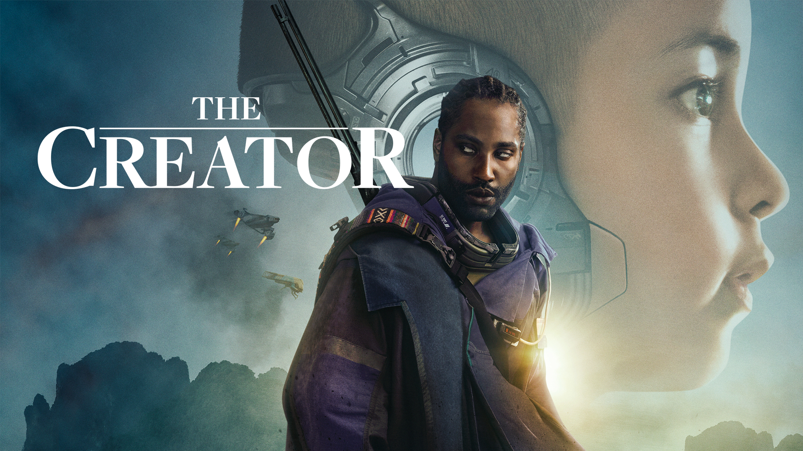

Opening Scene, The Creator
>Welcome to the future of robotics. Let them help with chores around the house—there isn't anything they can't do.
>The next marvelous advancement in robotics is artificial intelligence. By studying the human brain, we have given independent thought and life to robots, allowing them to join the American workforce—almost like real people.
>Now, a new technology is bridging the gap between humans and AI, making us closer than ever. By scanning your facial features, we can transfer them to a fully robotic body, making them more human than human. With a simulant, the future has never looked better.
>AI is now integrated into every part of our daily lives—they cook our meals, drive our cars, and serve as civil servants keeping the peace. And with the new state-of-the-art defense system, they even protect us.
